Maak je eigen selectie
Tik op “Lees meer” voor extra achtergrond. Er zijn geen vaste pakketten, geen beoordelingen en geen haast.
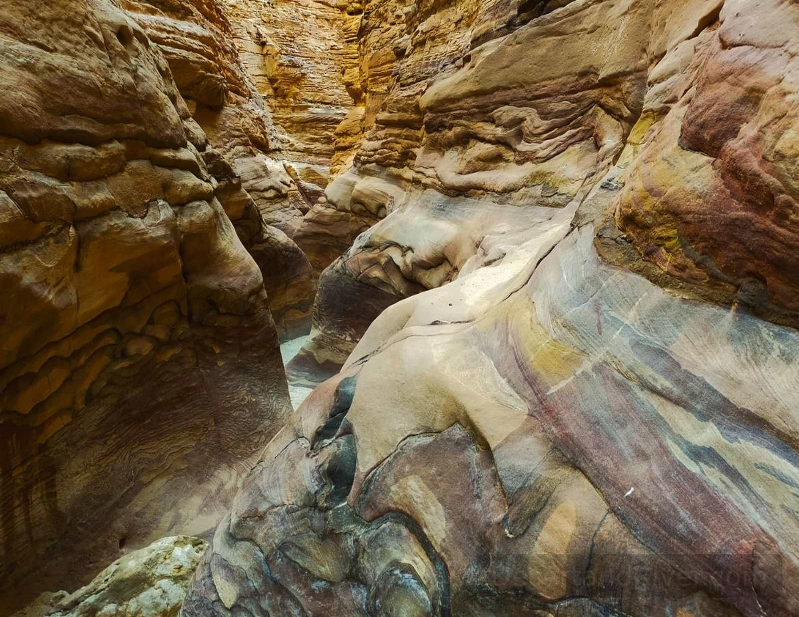
Coloured Canyon
De Coloured Canyon ligt op het Egyptische Sinaï-schiereiland bij Nuweiba. Het is een smalle zandstenen kloof, uitgesleten door oeroude watererosie en bekend om de gelaagde mineraalafzettingen in allerlei kleuren.
De gestreepte wanden van de canyon zijn in miljoenen jaren gevormd en tonen banden van ijzer, mangaan en zandsteen in gedempte rood-, paars- en okertinten. De kronkelende gangen worden onvoorspelbaar smaller en breder, waardoor momenten van benauwdheid en ruimte elkaar afwisselen en je je sterker bewust wordt van schaal en geologische tijd in een verder droog landschap.
Een begeleide wandeling door de canyon duurt meestal 2 uur, over oneffen terrein met af en toe wat licht klauterwerk.
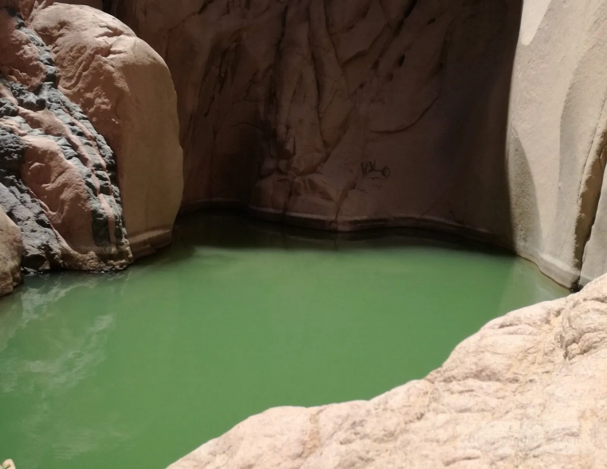
Wadi Weshwashy
Wadi Weshwashy is een smalle woestijncanyon op het Egyptische Sinaï-schiereiland, bij Nuweiba, bekend om de verborgen zoetwaterbaden tussen gebeeldhouwde zandsteenformaties.
De wadi is in duizenden jaren uitgesleten door seizoensgebonden overstromingen door sedimentgesteente en eindigt in een reeks natuurlijke bassins die gevuld worden door regenwater en ondergronds sijpelwater. Je bereikt het via een geleidelijke wandeling door de open woestijn; de overgang van de open vlakte naar de besloten canyon zorgt voor een duidelijke verandering in schaal en geluid, waar stilte en echo de enorme stilte van het omringende landschap vervangen.
Bereikbaar via een begeleide woestijnwandeling van 45–60 minuten vanaf het dichtstbijzijnde pad. Per 4x4 of kameel bereikbaar.

Hidden Canyons
Een smalle zandstenen canyon bij Taba in het oosten van Egypte, bekend als de Hidden Canyon, met goed bewaarde inscripties uit de Ottomaanse tijd in de rotswanden.
De canyon ligt in de bergen ten westen van Taba op het Sinaï-schiereiland en bestaat uit gelaagd zandsteen, gevormd door wind en seizoensgebonden water. Tussen de natuurlijke strepen staan Arabische inscripties uit de Ottomaanse tijd, die waarschijnlijk wijzen op bestuurlijke aanwezigheid of voorbijtrekkende reizigers. De nauwe doorgang, het gefilterde licht en het verweerde schrift zorgen voor een stille ontmoeting met geologische en historische tijd.
Ongeveer 30–45 minuten lopen; het mooist vroeg in de ochtend, als het koeler is en het licht zachter.

Wadi El Malha
Wadi El Malha is een woestijndal met zoutkorsten in Zuid-Sinaï, Egypte, ten oosten van het hoogland van de Sinaï, gekenmerkt door mineraalafzettingen, rotsformaties en seizoensgebonden waterlopen.
De naam van de wadi betekent “Zoutdal” en verwijst naar de lichte mineraalkorsten die door verdamping zijn ontstaan in dit droge landschap, gevormd door tektonische opheffing en erosie. Het brede, open bekken en de gedempte kleuren geven een sterk gevoel van schaal, waar stilte en openheid je bewust maken van geologische tijd en hoe klein je bent.
Bereikbaar per 4x4 of kameel, met korte verkenningswandelingen over oneffen terrein.

Bir El Berea
Bir el Berea is een afgelegen woestijnput en kampeerplek op het Egyptische Sinaï-schiereiland, in een landschap van zandsteenplateaus en grindvlaktes, gevormd door wind en tijd.
Bir el Berea ligt in centraal Sinaï en was vroeger een bescheiden waterbron voor bedoeïenengemeenschappen en reizigers op de routes door het binnenland van het schiereiland. Het omringende terrein, droog, uitgestrekt en dunbevolkt, geeft een sterk gevoel van afstand en stilte, waar geologische tijd aanweziger voelt dan menselijke beweging.
Het mooist tussen oktober en april, als de temperaturen overdag gematigd zijn en de toegangswegen beter begaanbaar.
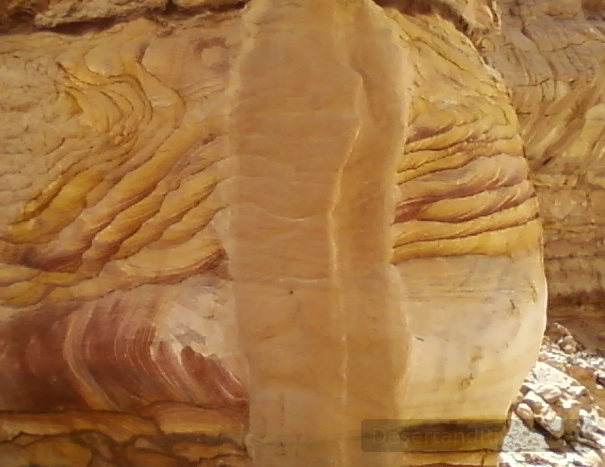
Rainbow Canyon
De Rainbow Canyon is een zandstenen kloof op het Egyptische Sinaï-schiereiland, bekend om de natuurlijk gestreepte rotsformaties, gevormd door tektonische opheffing en langdurige erosie.
De canyon ligt in het droge binnenland van Zuid-Sinaï. De gelaagde wanden tonen mineraalverkleuringen in gedempte rood-, oker- en paarstinten, als bewijs van geologische processen over miljoenen jaren. De nauwe gangen en het gefilterde licht zorgen voor een ingetogen sfeer waarin geluid zacht draagt en je je bewust wordt van schaal en van de tijd die in het gesteente ligt opgeslagen.
Gebruikelijke wandelroute: ongeveer 1–2 uur over oneffen, rotsachtig terrein.
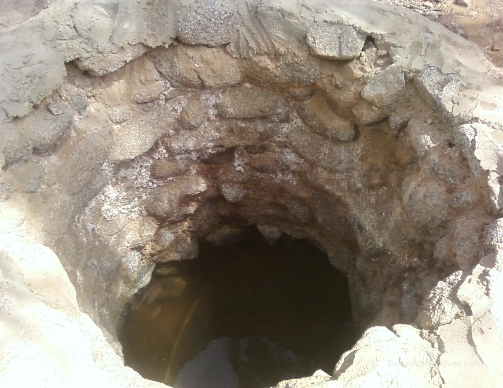
Bir El Sorah
Bir el Sorah is een afgelegen woestijnput in Wadi Watir in Zuid-Sinaï, Egypte, die vroeger diende als waterbron langs de bedoeïenenroutes door het binnenland.
Bir el Sorah ligt in de brede grindvlaktes van Wadi Watir en maakt deel uit van een netwerk van putten die ooit trekkende herders en kleine nederzettingen ondersteunden in een verder droog landschap. De put vormt een stille onderbreking in het uitgestrekte terrein, waar de stilte en openheid uitnodigen tot nadenken over uithoudingsvermogen, schaarste en het afgemeten ritme van het woestijnleven.
Bereikbaar per 4x4; ongeveer 60 km ten noordwesten van Nuweiba in Zuid-Sinaï.

Ain Fortaga
Ain Fortaga is een natuurlijke bron in het zuiden van het Sinaï-schiereiland, een zeldzame zoetwaterbron in het droge woestijnlandschap van de Egyptische bergen.
De bron ontspringt uit ruige zandsteenkliffen en voorzag van oudsher de lokale bedoeïenengemeenschappen en dieren van water. Het rustige stromen staat in scherp contrast met de hardheid van de omringende woestijn en biedt een moment van stilte en verbinding met de blijvende ritmes van dit landschap.
Bereikbaar via een wandeling van 30 minuten vanaf het dichtstbijzijnde woestijnpad, voor korte verkenningstochten.
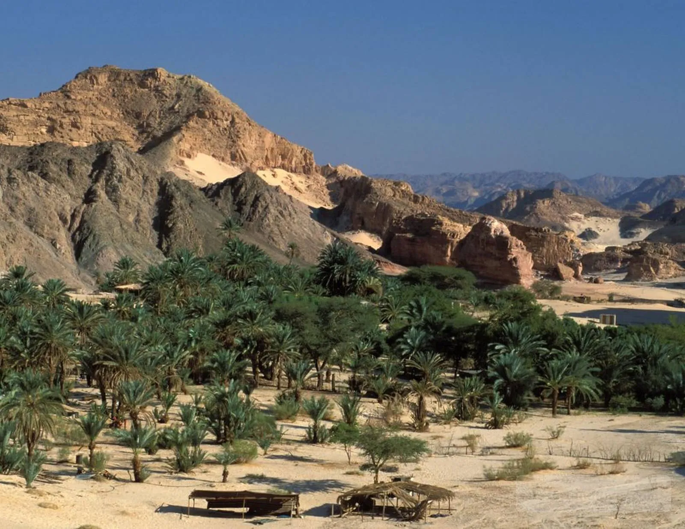
Ain Um Ahmed
Ain Um Ahmed is een natuurlijke bron in het zuiden van het Sinaï-schiereiland, een zeldzame zoetwaterbron in het droge woestijnlandschap van de regio.
De bron voorzag van oudsher nomadische bedoeïenengemeenschappen en dieren van water en vormt een kleine, vruchtbare enclave in een verder ruig terrein. Het stille water weerspiegelt de uitgestrekte, zwijgende ruimte eromheen en roept een gevoel op van tijdloze afzondering en subtiele continuïteit.
Bereikbaar per 4x4 vanaf het dichtstbijzijnde woestijnpad.

Wadi Gazhalla
Wadi Gazhalla is een woestijndal op het Sinaï-schiereiland, bekend om het rotsachtige terrein en de seizoensgebonden waterlopen. Volgens de overlevering is het genoemd naar de plek waar een man uit de streek een dode gazelle vond en haar jong redde.
De naam “Gazhalla” verwijst naar dat verhaal en betekent “de plek van de gazelle”, een stille menselijke band met het landschap. De ruige rotsformaties en het ongerepte zand roepen een gevoel van stilte en tijdloosheid op, waarin je voelt hoe natuur en herinnering langzaam over generaties zijn gevormd.
De wadi wordt meestal per voertuig doorkruist, niet te voet, wat een schilderachtige rit door de smalle woestijngangen oplevert.

Wadi El Rum
Wadi El Rum is een afgelegen dal in Zuid-Sinaï dat zich uitstrekt door ruig woestijnterrein, met rotskliffen, seizoensgebonden waterlopen en schaarse begroeiing.
De wadi maakt deel uit van een netwerk van dalen die in duizenden jaren door erosie zijn gevormd, met gelaagde rotsformaties en hier en daar archeologische sporen van bedoeïenenbewoning. De weidsheid roept een diepe stilte op, waarin de schaal van het landschap uitnodigt tot nadenken over tijd en uithoudingsvermogen.
Een gemiddelde wandeling van 1 uur, bereikbaar per 4x4
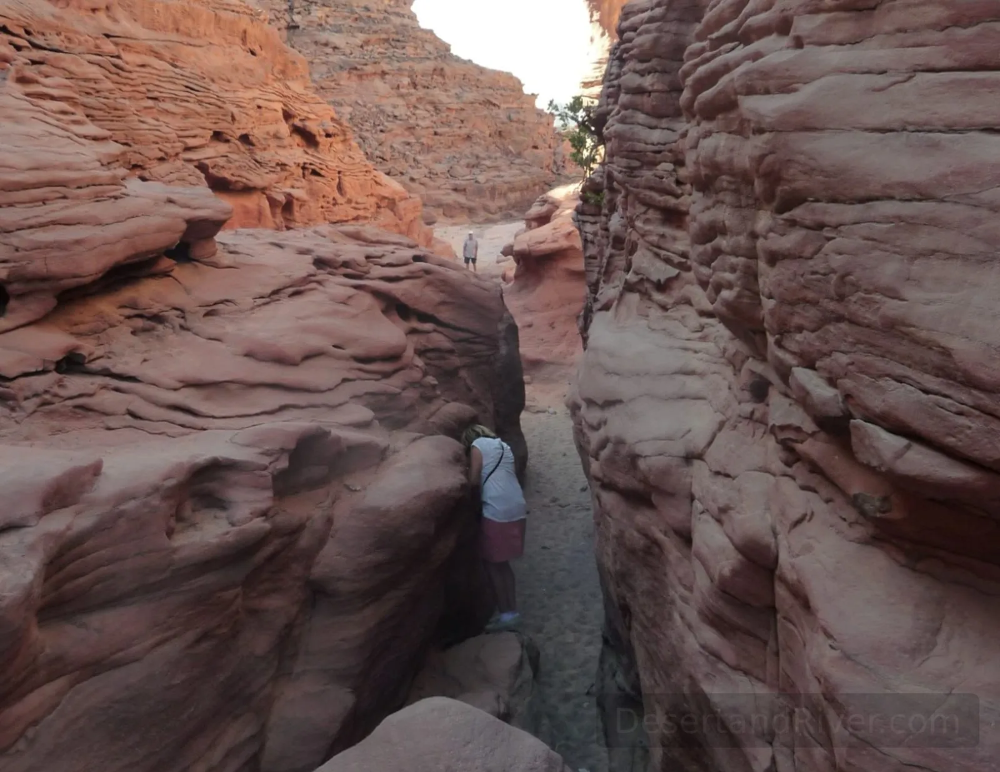
Salama Canyon (Small Coloured Canyon)
De Salama Canyon is een brede, veelkleurige zandstenen canyon in het zuiden van het Sinaï-schiereiland, een compacte geologische formatie die in duizenden jaren door erosie is gevormd.
De canyon toont lagen rood, oker en crèmekleurig gesteente, die de complexe geschiedenis van de sedimenten en subtiele mineraalverschillen in de regio laten zien. Als je door de kronkelende gangen loopt, voel je een stille samentrekking van ruimte en tijd, waarbij zonlicht en schaduw de intieme schaal van de wanden benadrukken.
Ongeveer 30 minuten om doorheen te lopen; het mooist in de koelere ochtend of laat in de middag.

Wadi El Disco
Wadi el Disco is een breed, open dal in Zuid-Sinaï, bekend om een torenhoge rotswand en de natuurlijke akoestiek die opvallende echo's over de woestijnbodem laat klinken.
Het uitgestrekte terrein van de wadi is geschikt om doorheen te trekken en om te overnachten, en geeft een gevoel van weidsheid dat zeldzaam is in de Sinaï. De steile klif en de galmende echo's maken je stil bewust van schaal en van de blijvende aanwezigheid van de woestijn, waar geluid en ruimte door de tijd heen met elkaar spelen.
Bereikbaar per voertuig; kamperen onder een heldere woestijnhemel is mogelijk.
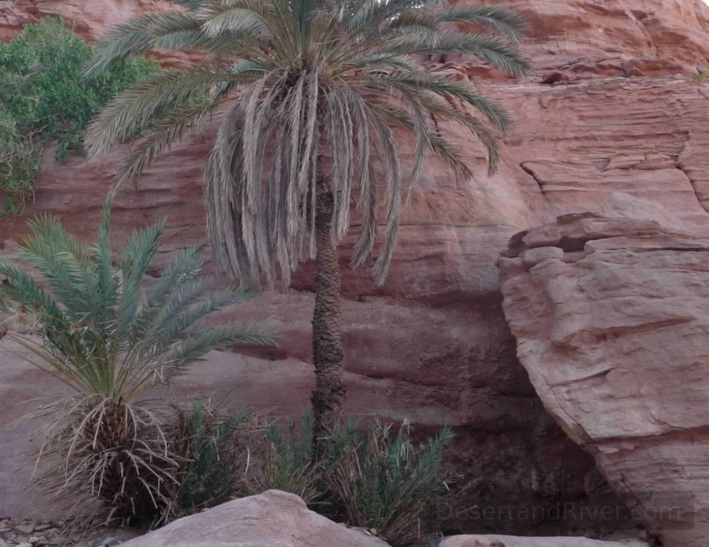
Oase Melahith
Deze afgelegen plek in de Sinaï, Egypte, combineert een wadi, een canyon, een oase met vier kleine drinkpoelen voor dieren en de berg Melahith, een gevarieerd natuurlandschap dat in duizenden jaren door water en wind is gevormd.
Het gebied kent opvallende geologische contrasten: brede canyonwanden komen uit op een oase met rotsformaties, waar vier kleine poelen water bieden aan dieren en planten zoals palmbomen, acacia's & kappertjesstruiken, voordat het terrein overgaat in ruige bergen.
Hoogte tussen 450 en 850 meter; gemiddelde trektocht aanbevolen.
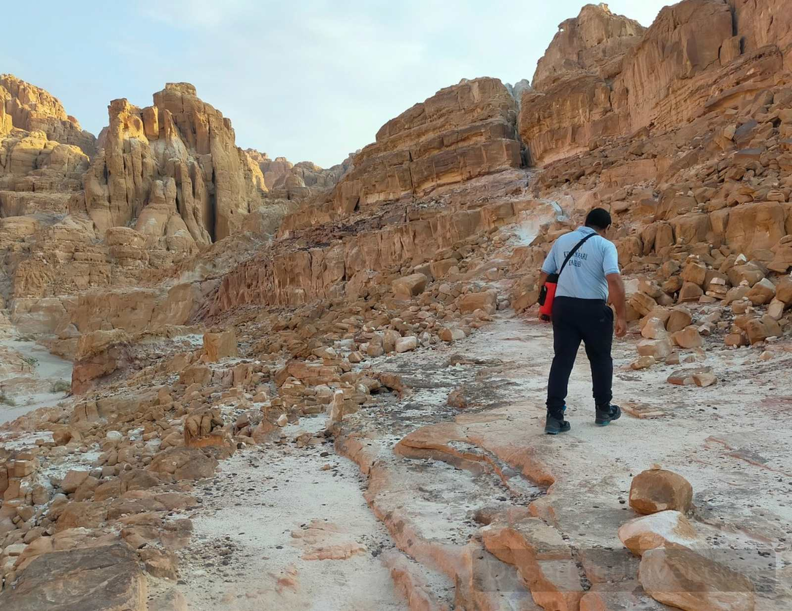
Nagb El Hemedat
Nagb el Hemedat is een smalle bergpas op het Sinaï-schiereiland, op ongeveer 650 m hoogte, die Wadi Gazallah verbindt met de Closed Canyon en inscripties uit de tijd van de kruisvaarders bevat.
Het pad klimt over ruige zandsteenruggen en biedt weidse uitzichten over de omliggende dalen en verre bergen. Inscripties van kruisvaarders in de rotsen vormen een tastbare band met middeleeuwse reizigers, terwijl de stille ruimte en het hoge uitzichtpunt een bezonnen gevoel van schaal en eenzaamheid oproepen.
Ongeveer 1 uur lopen; gemiddeld terrein; hoogte ~650 m.

Closed Canyon
Een smalle, kronkelende canyon bij de oase Ain Khudra op het Sinaï-schiereiland, met nauwe doorgangen waar je voorzichtig doorheen moet lopen.
De wanden rijzen steil op, wat een opvallend contrast tussen zon en schaduw geeft terwijl je door de nauwe ruimte loopt. Op sommige plekken is de canyon zo smal dat je zijwaarts moet lopen, wat zorgt voor een zeldzame intimiteit met het gesteente en een bezonnen besef van ruimte en schaal.
Looptijd: ongeveer 30 minuten heen en 30 minuten terug; zeer smalle doorgangen.

Mushroom Stone
De Mushroom Stone is een natuurlijk geërodeerde zandsteenformatie in de woestijn van Zuid-Sinaï, Egypte, door de wind uitgesleten tot een smalle steel met een brede, hoedvormige kop.
De formatie ligt langs woestijnpaden tussen Wadi Gazallah en Ain Khudra en is het resultaat van eeuwenlange winderosie op gelaagd zandsteen. De opvallende verhoudingen laten zien hoe de wind geleidelijk zachter gesteente wegschuurt, waardoor een vorm ontstaat die onwaarschijnlijk in balans lijkt en uitnodigt tot nadenken over geologische tijd en de stille volharding van de natuur.
Bereikbaar per 4x4, met een korte wandeling over vlak woestijnterrein.

Nagb Khudra
Nagb Khudra is een afgelegen wadi in Zuid-Sinaï langs de weg van Nuweiba naar Sint-Catharina, die aansluit op Ain Khudra en een historisch belangrijke route volgt.
De route loopt langs de Rots van de Inscripties, met oude Nabatese, Arabische en Griekse tekens, het bewijs van eeuwenlange culturele uitwisseling op het schiereiland. Het kale, door de zon gebleekte gesteente en de stille vlaktes geven een diep gevoel van tijd, alsof je door lagen menselijke en geologische geschiedenis loopt.
Bereikbaar te voet of per kameel via de weg van Nuweiba naar Sint-Catharina; gemiddeld terrein langs de wadi. Ongeveer 1 uur lopen.

Oase Ain Khudra
Ain Khudra is een kleine woestijnoase in Zuid-Sinaï, Egypte, waar bronnen die het hele jaar stromen plekjes groen in leven houden in een verder droog en ruig landschap.
De oase bood van oudsher water en beschutting aan bedoeïenengemeenschappen en reizigers die de Sinaï doorkruisten, een zeldzaam contrast met het kale terrein eromheen. De zacht ritselende palmen en het stille glinsteren van de door bronnen gevoede poelen roepen een gevoel van rust en stilstand op, en benadrukken de enorme schaal en subtiele schoonheid van de woestijn.
Bereikbaar via offroadpaden
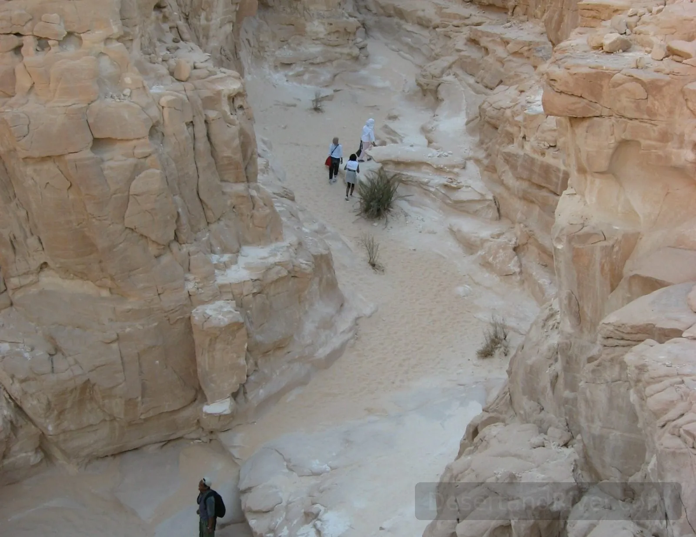
White Canyon
De White Canyon is een brede zandstenen kloof op het Sinaï-schiereiland, Egypte, tussen de weg van Sint-Catharina naar Nuweiba en de oase Ain Khudra.
De lichte zandsteenwanden van de canyon zijn in duizenden jaren door erosie gevormd en tonen subtiele lagen en texturen die de geologische geschiedenis van de regio weerspiegelen. Als je door de open ruimte loopt, voel je een stille weidsheid en blijvende rust, waarin de schaal van het landschap uitnodigt tot bezinning en een langzaam afstemmen op de tijd.
Bereikbaar vanaf wegen in de buurt, gemiddelde wandeling van 1 uur, hoogte 950 m

Magazah-dal & canyon
Een smalle canyon in Wadi Gazallah in Zuid-Sinaï, met beschutte plekken en wilde vijgenbomen die de bedoeïenen traditioneel Hamata noemen, aan beide kanten open.
De canyon vormt een doorlopende route van de weg Nuweiba–Sint-Catharina naar het Magazah-dal; te voet doe je er ongeveer een uur over. Het is er stil en warm, met verborgen openingen en natuurlijke schuilplekken, en de vijgenbomen langs het pad zorgen voor een bezonnen sfeer die de schaal en stilte van het omringende woestijnlandschap benadrukt.
De wandeling duurt ongeveer een uur; geschikt om te overnachten op beschutte plekken.

Wadi Gunai
Wadi Gunai is een woestijndal in Zuid-Sinaï, landinwaarts van Dahab, met zandsteenformaties, acaciabosjes en kleine bedoeïenennederzettingen.
Het dal ligt tussen de kustvlakte van Dahab en het granieten hoogland in het binnenland, en maakt deel uit van een groter netwerk van wadi's die door seizoensregen en erosie zijn gevormd. Delen ervan worden van oudsher bewoond en bewerkt door bedoeïenenfamilies; het landschap heeft een menselijke schaal en een stille continuïteit, waarin de akkertjes zacht contrasteren met de droge omgeving. Het ligt dicht bij Dahab en geeft je een voorproefje van de woestijn, heel geschikt voor een bedoeïenendiner met overnachting.
Bereikbaar via een onverharde weg vanuit Dahab; geschikt voor korte wandelingen en lichte hikes

Wadi Jebi
Wadi Jebi is een bewerkt woestijndal in Zuid-Sinaï, Egypte, waar kleine boerderijen, oude inscripties en archeologische sporen naast elkaar bestaan in een breed zandsteenlandschap dat door seizoensgebonden water is gevormd.
Langs delen van de wadi liggen een paar familieboerderijen, waar groenten, fruit, mango's en olijven groeien dankzij grondwater en traditionele irrigatie. Midden in het dal staan inscripties van ongeveer 2000 jaar oud in de rotsen, en op een heuvel ernaast liggen stenen werktuigen en zichtbare fossielen. Zo staat de landbouw van nu stil in een veel langere lijn van menselijke en geologische tijd.
Bereikbaar per 4x4; reken op 1–2 uur lopen tussen de boerderijen, de inscripties en de archeologische heuvel.

Nawamis
De nawamis zijn ronde prehistorische stenen bouwwerken in de hoge woestijn van Zuid-Sinaï, Egypte, uit de vroege bronstijd en verbonden met vroege herdersgemeenschappen.
Deze lage, droog gestapelde kamers liggen verspreid over afgelegen plateaus tussen de bergen in het binnenland en de Golf van Akaba, en behoren tot de oudste overdekte gebouwen van Egypte, gebouwd rond het 4e millennium v.Chr. De kleine deuropeningen zijn meestal op het westen gericht, wat wijst op een rituele of funeraire betekenis. Tussen deze bouwwerken word je je sterk bewust van de enorme stilte en de diepte van de menselijke tijd in het woestijnlandschap.
Het best bereikbaar per 4x4; de plekken liggen meestal aan ruwe woestijnpaden vanuit centraal Zuid-Sinaï.

Nawamis-dorp
Het Nawamis-dorp op het Sinaï-schiereiland, Egypte, is een kleine nederzetting bij oude ronde stenen graven, bekend om de kameeltraining en de traditionele bedoeïenenleefwijze.
In het dorp leven mensen samen met geiten, kippen, duiven en eenden, wat een nauwe verwevenheid laat zien tussen mensen, dieren en kinderen in een open omgeving zonder hekken. Dit dagelijkse ritme speelt zich af naast de stille, gestapelde stenen graven uit de vroege bronstijd, wat een rustig gevoel van continuïteit tussen verleden en heden geeft. De kamelen die voor races worden getraind vormen een subtiel, levendig contrast met de stilte van de omringende woestijnvlakte.
Rondlopen tussen het dorp en de graven is makkelijk, over vlak woestijnterrein.
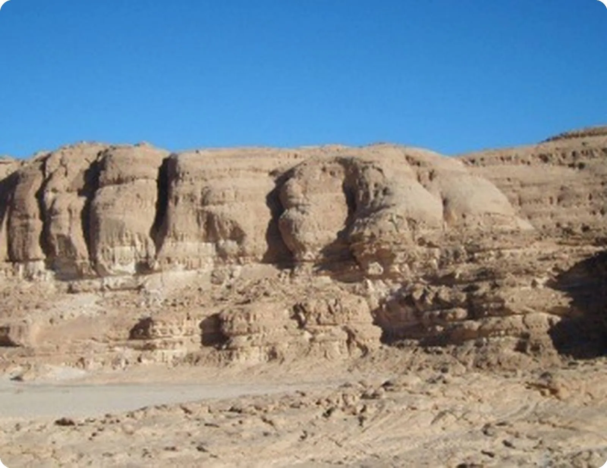
Gebl El Matamir
Gebl El Matamir is een door de wind gevormd bergmassief in centraal Sinaï, waar met zand bedekte rotsblokken uit het woestijnplateau oprijzen; hun verborgen contouren weerspiegelen de betekenis van “Matamir”.
De grote stenen van het massief liggen deels onder het zand begraven en zijn in de loop van de tijd gevormd door de aanhoudende woestijnwind, wat een landschap van verborgen vormen en subtiele texturen oplevert. Dit stille samenspel van steen en zand roept een gevoel van verborgenheid en rust op, een bezonnen ontmoeting met de langzame, blijvende veranderingen van de woestijn.
Wandeltijd over de hoofdkam: ongeveer 2–3 uur.

Gebl Makhroom (Dragon Head Mountain)
Gebl Makhroom, oftewel de Dragon Head Mountain, is een zandstenen top in Zuid-Sinaï, door wind en zand gevormd tot iets wat lijkt op de kop van een dinosaurus, met een holle “oogkas”.
De winderosie heeft een opvallend gat uitgesleten, dat doet denken aan het oog van een dinosaurus, terwijl de omliggende ruggen tanden en kaaklijnen suggereren. Deze natuurlijke beeldhouwkunst benadrukt de ruige schaal van het landschap en geeft een bezonnen besef van hoe geduldig de tijd de Sinaïwoestijn vormt.
Hoogte ongeveer 820 meter; gemiddelde wandeling
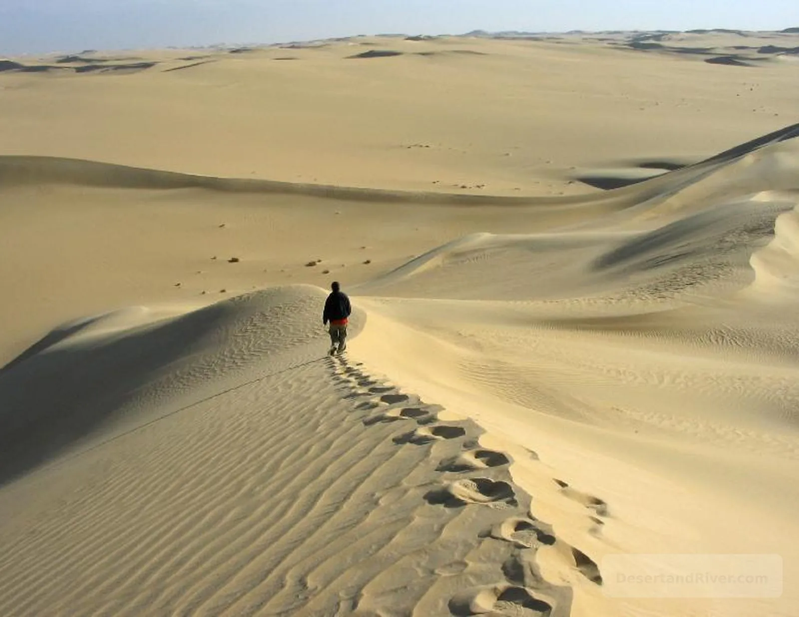
Zandduin Hedoda
Het zandduin Hedoda is een uitgestrekte woestijnformatie in Zuid-Sinaï, met zacht golvend zand, gevormd door de wind en seizoenspatronen.
Het duin ligt in de droge landschappen die de bergen van de Sinaï verbinden met de lager gelegen woestijnvlaktes, en geeft een stil, bijna meditatief gevoel van ruimte. De gladde, verschuivende contouren weerspiegelen het langzame verstrijken van de tijd, waar voetstappen snel verdwijnen en de horizon zich onafgebroken uitstrekt.
Over het duin lopen is een korte wandeling, en het is een geweldige plek om te sandboarden.

Bir Safra
Bir Safra is een woestijnput in Zuid-Sinaï, Egypte, in 1986 aangelegd om drinkwater te leveren aan de dieren van een inmiddels verlaten bedoeïenennederzetting.
De put ligt midden in uitgestrekte zandsteenvlaktes en leverde betrouwbaar water voor vee en bewoners, al bestaat de nederzetting niet meer. Het heldere water weerspiegelt de weidse woestijnhemel en roept een stil gevoel van volharding op, en de subtiele sporen van menselijke aanwezigheid in een verder tijdloos landschap.
Bereikbaar per 4x4

Zandduin Safra
Het zandduin Safra is een opvallende woestijnformatie in Zuid-Sinaï, genoemd naar het kenmerkende gele zand (“safra” betekent geel in het Arabisch), tegen een achtergrond van droge bergen.
Het duin maakt deel uit van het uitgestrekte woestijnlandschap van de Sinaï, in duizenden jaren gevormd door wind en temperatuurwisselingen. De gladde, gouden hellingen, ideaal om te sandboarden, geven een stil gevoel van stilstaande tijd en nodigen uit tot nadenken over de weidse, verschuivende horizon.
Naar de top lopen duurt ongeveer 15 minuten; vlak bij de top kan het zwaar zijn door het zachte, diepe zand.

Het dorp Arada
Arada is een klein dorp langs de weg in Zuid-Sinaï, tussen Nuweiba en de weg naar Sint-Catharina, waar het traditionele bedoeïenenleven doorgaat naast ambachtelijk werk.
Het dorp bestaat uit eenvoudige woningen waar de bewoners weven, spinnen en andere handwerken doen, en zo hun culturele tradities van generatie op generatie doorgeven. De tijd gaat hier langzaam, bepaald door het ritme van het dagelijks werk en het kale woestijnlandschap, wat een stil gevoel van continuïteit en aanwezigheid geeft.
Bereikbaar over de weg; een wandeling door het dorp duurt ongeveer 20–30 minuten.

Wadi Arada
Wadi Arada is een afgelegen woestijndal in Zuid-Sinaï, Egypte, bekend om de ruige zandsteenformaties en de oude rotsinscripties op de hellingen.
In het dal staan talloze rotstekeningen van het dagelijks leven, vergelijkbaar met taferelen in de tempels van de Sinaï, waaronder een opvallende afbeelding van een wilde kat, waarschijnlijk een luipaard of leeuw, die zo'n 8000 jaar oud zou zijn, uit de tijd dat de regio op een savanne leek. Het zonlicht over de inscripties laat zien hoe ze de tijd hebben doorstaan en nodigt uit tot nadenken over het leven van de mensen die ooit door dit stille landschap trokken. Vol kleurrijke rotsen en inscripties.
Bereikbaar via een wandeling van 1 uur vanaf de weg Sint-Catharina–Nuweiba. Makkelijke wandeling.

Arada Canyon (Double Canyon)
De Arada Canyon, of Double Canyon, is een zandsteenformatie in Zuid-Sinaï met twee verbonden kloven die door erosie zijn gevormd, en een plateau met oude zeefossielen.
De canyon dankt zijn naam aan de twee routes: je klimt door de ene kloof omhoog en daalt aan het eind door de andere af, langs gesteente dat doet denken aan de Amerikaanse Antelope Canyon. Op het plateau herinneren versteende koralen en zeedieren aan de prehistorische zeebodem, terwijl de nauwe doorgang een stil gevoel van schaal en diepe tijd geeft.
De hele route door de dubbele canyon, inclusief klimmen en afdalen, duurt ongeveer 1–1,5 uur.

Pigeon Canyon
De Pigeon Canyon is een breed, laaggelegen zandsteendal in Zuid-Sinaï, Egypte, waar wilde duiven in natuurlijke rotsholtes op de bodem en hellingen leven.
De canyon strekt zich zacht uit over het droge terrein en is een leefgebied voor duiven die van nature tussen de rotsen leven, niet door mensen gehouden. Het zonlicht beweegt langzaam over de brede, lage wanden en laat texturen en patronen zien die een subtiel gevoel van rust geven.
Ongeveer 1 uur lopen; makkelijk.

Zig Zag Canyon
De Zig Zag Canyon is een zandstenen kloof in het zuiden van het Sinaï-schiereiland, genoemd naar de scherpe bochten. Hij ligt bij de weg Sint-Catharina–Nuweiba en vormt een compacte geologische gang.
Het kenmerkende zigzagpad is het resultaat van duizenden jaren erosie, waardoor intieme ruimtes zijn ontstaan tussen de gelaagde zandsteenwanden. Het is heerlijk om hier een nacht door te brengen in het zachte licht van kaarsen, met een stil, bezonnen gevoel van beschutting en rust.
De wandeling duurt ongeveer 30 minuten heen en terug; gemiddeld zwaar.
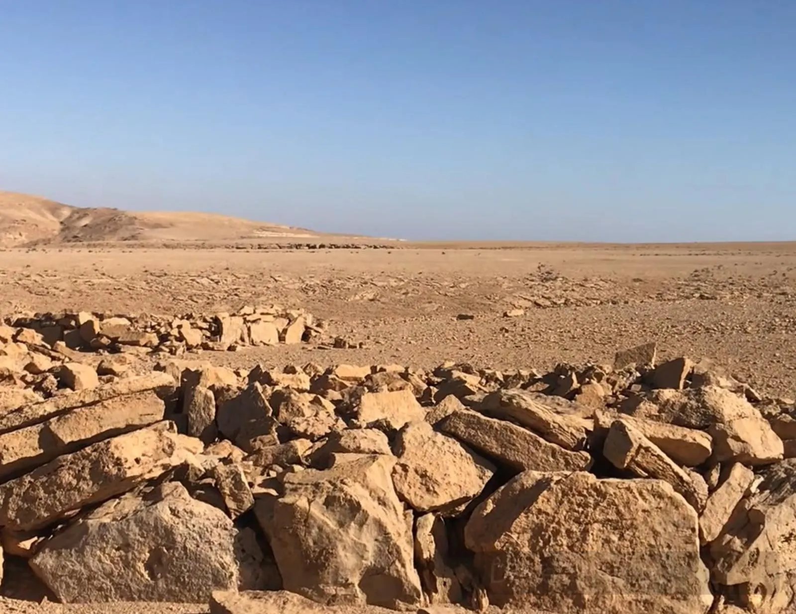
Gebl Gunna
Gebl Gunna is een zandstenen berg in centraal Sinaï, bekend om de geodes, stenen schoorstenen en geothermische openingen op de top.
Op de top zitten geothermische openingen die je normaal alleen onder de zee vindt, een aanwijzing voor het oeroude mariene verleden van de berg. Stenen schoorstenen markeren deze openingen, en verspreide geodes vangen het woestijnlicht, wat een stil, bezonnen besef geeft van de tijd en de langzame geologische verandering van het land.
Ongeveer 1 uur lopen vanaf de weg Sint-Catharina–Nuweiba, gemiddeld zwaar.

Sint-Catharinaklooster
Het Sint-Catharinaklooster, aan de voet van de berg Sinaï in het zuiden van Egypte, is het oudste nog werkende christelijke klooster ter wereld, met onafgebroken kloosterleven sinds de 6e eeuw.
Het klooster werd onder Byzantijnse bescherming gesticht en bewaart oude manuscripten, iconen en relikwieën, het resultaat van eeuwen ononderbroken religieuze praktijk. Omringd door ruige bergen roepen de stille binnenplaatsen en sobere stenen gebouwen een bezonnen rust op, in contrast met het harde woestijnlandschap erbuiten.
Op 1580 m boven zeeniveau; het hele jaar bereikbaar via gemiddelde wandelpaden.

Blue Desert
De Blue Desert is een afgelegen gebied in Zuid-Sinaï, Egypte, bekend om de lichte zandsteenheuvels met een blauwige mineraalglans en hier en daar beschilderde rotsformaties.
In 1979 schilderde de Belgische kunstenaar Jean Verame hier een aantal rotswanden felblauw, als symbool voor de vrede, en voegde zo een menselijke laag toe aan de natuurlijke vormen van de woestijn. Het zachte, gedempte landschap met deze blauwe accenten roept rust en bezinning op, een stil contrast met de omliggende bergen en dalen.
Bereikbaar per 4x4

Berg Sinaï
De berg Sinaï is een opvallende granieten top in het zuiden van het Egyptische Sinaï-schiereiland, historisch en religieus belangrijk als plek van bijbelse openbaring.
De berg is 2285 meter hoog en maakt deel uit van het ruige woestijnlandschap tussen Sint-Catharina en de Rode Zee. De kale hellingen en de stille top roepen een diep gevoel van eenzaamheid en tijd op, en verbinden bezoekers met de grootsheid van zowel natuur als geschiedenis.
Hoogte: 2285 meter; de beklimming duurt meestal 2–3 uur vanaf de paden aan de voet.
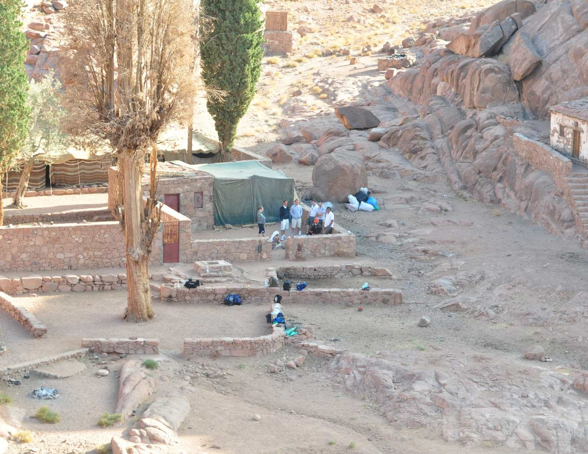
Farsh Eliyah
Een afgelegen plateau in de Sinaï, Egypte, ongeveer halverwege het Sint-Catharinaklooster en de top van de berg Sinaï, met ruig terrein en schaarse begroeiing.
Farsh Eliyah is een hooggelegen, rotsachtig landschap, in duizenden jaren door erosie gevormd, met panoramische uitzichten over de omliggende dalen en verre bergen. Het plateau geeft een stil gevoel van afzondering, waar de stilte van de woestijn de schaal en duurzaamheid van het terrein benadrukt: een bezonnen pauze tussen het klooster beneden en de top erboven.
Bereikbaar via een gemiddelde wandeling van 1,5–2 uur vanaf het klooster richting de berg Sinaï.

Katherinaberg
De Katherinaberg is de hoogste top van het Sinaï-schiereiland, bij Sint-Catharina, een opvallend massief van graniet en zandsteen in een ruig woestijnlandschap.
De berg is historisch belangrijk door de nabijheid van het Sint-Catharinaklooster en de band met religieuze pelgrimstochten. Hij rijst steil op boven de omliggende vlaktes, wat een scherp visueel contrast geeft. De stille ruimtes en weidse uitzichten geven een diep gevoel van rust en schaal, en nodigen uit tot bezinning op landschap en tijd.
Hoogte: 2634 meter; meestal een zware beklimming van 2–3 uur vanaf Sint-Catharina.

Wadi el Arbaeen
Wadi el Arbaein is een breed, droog dal in Zuid-Sinaï dat de Katherinaberg verbindt met het nabijgelegen klooster en seizoenswater door de omliggende zandsteenruggen voert.
De wadi vormt een wandelroute van een uur tussen de berg en het klooster, met een bodem van verspreid grind en schaarse woestijnbegroeiing. Terwijl je erdoorheen loopt, geven de omringende ruggen een stil gevoel van rust en van het langzame verstrijken van geologische tijd, wat uitnodigt tot bezinning in het ruige landschap.
Een uur lopen; gemiddeld terrein, geschikt voor de meeste wandelaars.
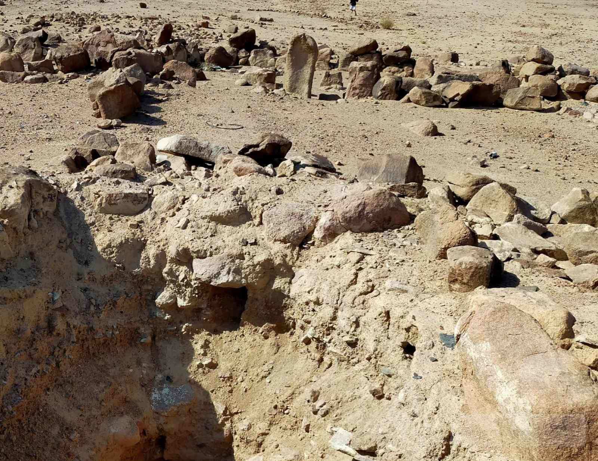
Sheikh Mohsin
Sheikh Mohsin is een bescheiden rotspartij in de woestijn van Zuid-Sinaï, Egypte, bekend om de stenen formaties uit de steentijd, de schaarse begroeiing en de nabijheid van de omliggende zandsteenvlaktes.
Op deze plek liggen stenen die door oude bewoners zijn neergelegd, een tastbaar bewijs van menselijke activiteit tot in de steentijd. De stille vlaktes van okerkleurig gesteente en door de zon gebakken aarde roepen een tijdloze rust op en verbinden bezoekers subtiel met de diepte van de geschiedenis en de sobere schaal van de woestijn.
Bereikbaar via onverharde woestijnpaden

Wadi Zaraniq
Wadi Zaraniq is een droog dal in centraal Sinaï, een natuurlijke gang van zandsteen en woestijn die van oudsher dient als bedoeïenenroute tussen nederzettingen.
De wadi strekt zich uit over ruige bergen en vlaktes, en de weidsheid geeft een stil, blijvend besef van de schaal en geschiedenis van de woestijn. Reizigers doorkruisen hem vaak per voertuig, over een route die al lang wordt gebruikt voor lokaal verkeer en handel.
Een rit door Wadi Zaraniq duurt ongeveer 2–3 uur.

Zaraniq-grot
De Zaraniq-grot is een kalksteenformatie in de woestijn van Zuid-Sinaï bij Wadi Zaraniq, bekend om de oude, kleurrijke wandschilderingen van ongeveer 12.000 jaar oud.
Binnen in de grot is levendige prehistorische kunst bewaard gebleven, een zeldzame blik op vroege menselijke expressie in de regio. Als je de koele, schaduwrijke ruimte binnengaat, ervaar je een opvallend contrast met de zonnige woestijn buiten, wat een gevoel van diepe continuïteit oproept en stille bezinning op duizenden jaren menselijke aanwezigheid.
Bereikbaar via een korte wandeling van 20 minuten vanaf het hoofdpad.

Nabatese oorlogsscène
De Nabatese oorlogsscène is een oud rotsreliëf in Zuid-Sinaï, met Nabatese krijgstaferelen uitgehakt in de zandsteenkliffen langs historische handelsroutes.
Het reliëf stamt waarschijnlijk uit het begin van het eerste millennium na Christus en toont gewapende figuren en kamelen in een levendige opstelling, een weerspiegeling van de militaire en culturele aanwezigheid van de Nabateeërs in de regio. Het verweerde oppervlak en de afgelegen ligging geven een stil gevoel van volharding en het verstrijken van de tijd, en nodigen uit tot nadenken over menselijk streven in het uitgestrekte woestijnlandschap.
Bereikbaar per 4x4

Wadi Feiran
Wadi Feiran is de grootste en vruchtbaarste wadi van Zuid-Sinaï, een breed woestijndal met palmbossen en nederzettingen ten noordwesten van Sint-Catharina.
Het dal wordt al lang in verband gebracht met het vroegchristelijke kloosterleven en soms gelijkgesteld aan het bijbelse Refidim. Tussen de tuinen zijn sporen bewaard van Byzantijnse kerken en kluizenaarswoningen. Omringd door granieten bergen onderbreekt het onverwachte groen de droogte eromheen, wat een stil gevoel van continuïteit geeft tussen oude bewoning en het huidige ritme van het bedoeïenenleven.
Ongeveer 130 km ten noordwesten van Sharm El Sheikh; het hele jaar bereikbaar via een verharde weg.
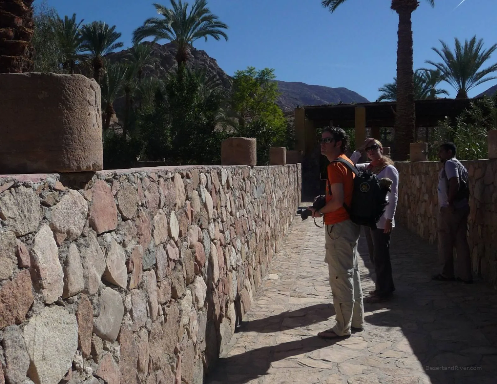
Klooster van de Zeven Nonnen
Het Klooster van de Zeven Nonnen, in Zuid-Sinaï bij de berg Sinaï, is een kleine historische religieuze plek die verbonden is met de vroegchristelijke kloostertraditie in de Sinaïwoestijn.
Het klooster is traditioneel verbonden met koptisch-christelijke devotie en weerspiegelt het ascetische erfgoed dat zich vanaf de late oudheid rond de berg Sinaï ontwikkelde. In een droog, bergachtig landschap roepen de bescheiden stenen gebouwen en de stille omgeving de rust op die de vroege monniken zochten, en voelen bezoekers de afzondering die door woestijnlicht, wind en tijd is gevormd.
Bereikbaar via een ruw woestijnpad; de omstandigheden wisselen

Al Karm Ecolodge
Al Karm Ecolodge is een kleine, duurzaam gebouwde woestijnlodge in Zuid-Sinaï, gemaakt van lokale materialen en volgens traditionele bouwmethoden, midden in een bergachtig bedoeïenenlandschap.
De lodge is gebouwd met biologisch afbreekbare, lokale materialen en regionale bouwtechnieken, en laat zien hoe oude woestijntradities passen bij hedendaagse ecologische zorgen. De lemen muren en open binnenplaatsen temperen de hitte en omlijsten de weidse bergen, waar stilte en wisselend licht je sterker bewust maken van schaal, tijd en elementaire eenvoud.
In Zuid-Sinaï, ongeveer 1–2 uur rijden vanaf Dahab, afhankelijk van de route door de woestijn.
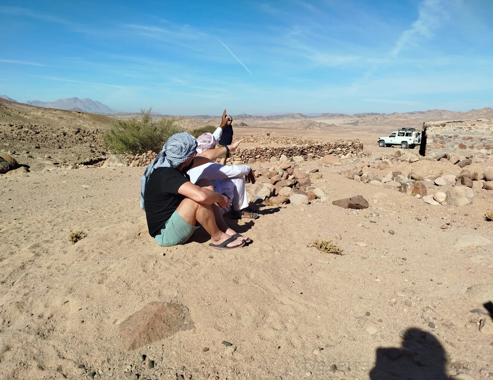
Sheikh Awad
Sheikh Awad is een oude woestijnplek in Zuid-Sinaï, Egypte, bekend om de overblijfselen uit de steentijd en de ligging in het hooggebergte tussen de wadi's in het binnenland en de kustvlaktes.
Archeologische sporen in het gebied zijn onder meer stenen bouwsels en stenen werktuigen van vroege menselijke bewoning, die teruggaat tot de steentijd. De verspreide formaties van bewerkt steen tegen het kale granieten terrein roepen een stille continuïteit van menselijke aanwezigheid op, waarbij de schaal van geologische tijd individuele levens nietig maakt en toch hun afdruk bewaart.
In het bergachtige binnenland van Zuid-Sinaï; bereikbaar per 4x4 via woestijnpaden.

Het Nabatese dorp
Het Nabatese dorp bij Sint-Catharina, Zuid-Sinaï, is een archeologische woestijnnederzetting met de stenen overblijfselen van een handelsgemeenschap die verbonden was met de Nabateeërs.
De plek ligt in het bergachtige binnenland van Zuid-Sinaï en wordt vaak bezocht via het gebied rond El Karm. Ze bestaat uit lage, verweerde stenen bouwsels die opgaan in het droge terrein. De Nabateeërs, bekend om hun regionale handelsnetwerken rond Petra, onderhielden routes door de Sinaï, en deze nederzetting laat zien hoe ze zich aanpasten aan een harde woestijnomgeving. Tussen de resten voel je eerder de schaal van de tijd dan die van de architectuur.
Bereikbaar per 4x4

Wadi Slaf
Wadi Slaf is een historisch belangrijk woestijndal in het gouvernement Zuid-Sinaï, Egypte, en vormt een belangrijke route door de bergen richting Sint-Catharina.
De wadi ligt tussen hoge precambrische formaties van migmatiet, gneis en amfiboliet, en is al lang een route tussen Wadi Feiran en Wadi El Sheikh; in de jaren 1920 werd er een pad voor voertuigen aangelegd. Archeologische resten, waaronder prehistorische nawamis en sporen van vroege kopermijnbouw in gebieden in de buurt zoals Wadi Nasb, getuigen van langdurige menselijke aanwezigheid. De omvang van het dal en de door mineralen verdonkerde rotswanden roepen een stil besef op van geologische en historische tijd.
Bereikbaar per 4x4

Wadi Isla
Wadi Isla is een bergachtig woestijndal in het gouvernement Zuid-Sinaï, Egypte, bij El Tor en Sint-Catharina, bekend om de granietformaties en het droge, ruige terrein.
Wadi Isla ligt tussen El Tor en Sint-Catharina en maakt deel uit van het granieten bergsysteem dat het binnenland van Zuid-Sinaï bepaalt. De smalle doorgangen en verweerde rotswanden laten geologische processen van duizenden jaren zien, terwijl de stille schaal van het landschap je bewust maakt van tijd die niet in uren wordt gemeten, maar in steen.
Wandelroutes door de wadi duren meestal 2–4 uur, afhankelijk van je tempo en het startpunt.

Wadi Hebran
Wadi Hebran is een breed woestijndal in Zuid-Sinaï, Egypte, bekend om de traditionele bedoeïenenroutes en de bijzondere prehistorische stenen bouwwerken, nawamis, langs de oevers.
Vroeger was Wadi Hebran een doorgangs- en graasroute tussen de nederzettingen in de bergen en de kust van de Rode Zee. Twee nawamis op de oevers van de wadi worden beschenen door de stralen van de ondergaande zon, een subtiele uitlijning die misschien het einde van het leven symboliseerde, en die uitnodigt tot nadenken over het samenspel van menselijke rituelen, tijd en het uitgestrekte woestijnlandschap.
Bereikbaar per 4x4; het middelste deel doorkruisen duurt meestal 2–3 uur, afhankelijk van de route en de omstandigheden.
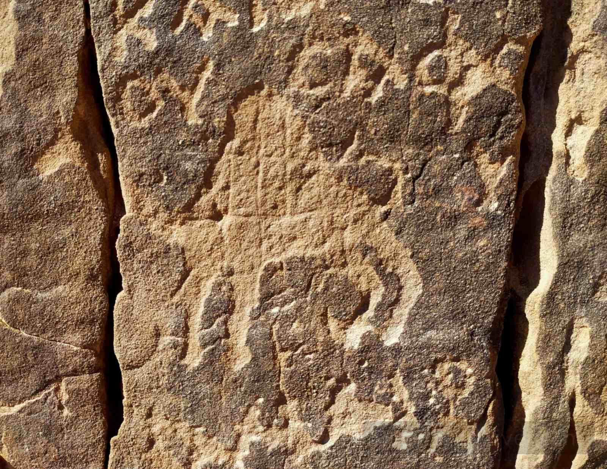
Wadi Mukatab
Wadi Mukatab in Zuid-Sinaï, Egypte, is een droog dal dat bekendstaat om de enorme hoeveelheid oude inscripties in de rotswanden.
Hier is een opmerkelijke verzameling Nabatese en pre-Nabatese rotstekeningen bewaard gebleven, waaronder geometrische motieven en vroege schriften, die de historische handels- en culturele netwerken van de regio weerspiegelen. Tussen de verweerde stenen voel je het langzame verstrijken van de tijd en de blijvende stilte van dit woestijnlandschap.
Bereikbaar via een gemiddelde wandeling van 1–2 uur

Wadi el Seha
Wadi el Seha is een afgelegen woestijndal in Zuid-Sinaï, Egypte, met ruige rotsformaties, af en toe stromend water en sporen van oude menselijke activiteit.
De wadi loopt door het droge landschap en geeft een kijkje in de geologische geschiedenis van de Sinaï en de schaarse, taaie begroeiing. Als je over de bodem loopt, voel je de stilte en de schaal van de tijd, waar de stilte alleen wordt onderbroken door het fluisteren van de wind over de stenen.
Bereikbaar per 4×4; gemiddeld lopen vereist

Wadi el Maghara
Wadi el Maghara is een droog dal in Zuid-Sinaï, Egypte, bekend om de prehistorische grotten, oude inscripties en enkele van de oudst bekende Egyptische turkooismijnen, uit de tijd van de 7e koning van de 1e dynastie.
In de wadi staan inscripties van meer dan 4700 jaar oud, met figuren van gelijke lengte die een kind bij de hand houden, een zeldzame afbeelding van gelijkheid in de Oud-Egyptische kunst. Samen met grafresten en rotstekeningen geven de stille woestijnvlaktes een diep gevoel van continuïteit en menselijke verbondenheid door de millennia heen.
Bereikbaar per 4x4

Wadi Baba
Wadi Baba is een breed, droog stroomgebied in het zuidwesten van de Sinaï, Egypte, dat water naar de Golf van Suez voert en ruig granieten terrein met een gelaagde geschiedenis omvat.
In de wadi zijn sporen van menselijke activiteit uit de faraonische, Nabatese, christelijke en islamitische tijd, waaronder verspreide ruïnes en inscripties. In dit kale landschap geeft het spel van licht op de granieten ruggen een tijdloze rust en een subtiel gevoel van verbondenheid met de blijvende geschiedenis van de regio.
Bereikbaar per 4x4; bij de zeldzame regenval komen plotselinge overstromingen vaak voor.
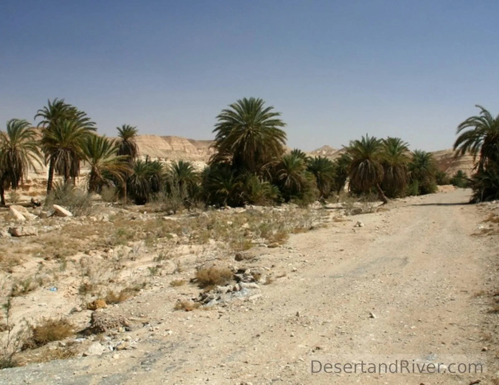
Wadi Gharandal
Wadi Gharandal is een breed woestijndal in het westen van Zuid-Sinaï, Egypte, bekend om de seizoensgebonden zoetwaterbronnen en groepjes palmen in een verder droog landschap.
De wadi ligt in de kustvlakte tussen de Golf van Suez en het binnenland van de Sinaï en maakt deel uit van een oud routenetwerk tussen Egypte en de Levant. Anders dan veel droge dalen in de regio stroomt hier af en toe water en groeit er wat begroeiing, wat een opvallend contrast geeft tussen steen, zand en groen: een stille herinnering aan veerkracht in schijnbare kaalheid.
Bereikbaar per 4x4

Ayoun Musa
Ain Musa, of de Bronnen van Mozes, is een groep zoetwaterbronnen in Zuid-Sinaï bij de Golf van Suez, historisch verbonden met het verhaal over Mozes in de Bijbel en de Koran, en later gebruikt als militaire stelling tijdens de Israëlische bezetting van het schiereiland.
De bronnen liggen in een woestijnvlakte met weinig begroeiing; de bescheiden poelen en palmbosjes vormen een ingetogen contrast met het droge landschap eromheen. Halverwege de 20e eeuw werd het gebied door de strategische ligging door Israëlische troepen gebruikt als versterkte stelling tijdens de bezetting van de Sinaï (1967–1982). Resten daarvan, zoals aarden wallen en verdedigingsposities, zijn nog zichtbaar, naast gedenktekens voor latere Egyptische militaire acties.
Ongeveer 25–30 km ten zuiden van de Ahmed Hamdi-tunnel, bereikbaar over de weg.

Wadi Nasb
Wadi Nasb is een droog dal (wadi) in Zuid-Sinaï, Egypte, bekend om de uitgebreide archeologische resten van oude kopersmelterijen en bijbehorende industriële activiteit in het ruige woestijnlandschap van de Sinaï.
Wadi Nasb ligt op ongeveer 355 m boven zeeniveau in het zuidwesten van de Sinaï en was vanaf het Oude Rijk tot in latere perioden een centrum van ertsverwerking, waar kopererts in een complex van ovens, bestuursruimtes en uitkijkposten tot metaal werd verwerkt. De hoeveelheid slakken en bouwresten laat zien hoe lang hier is geproduceerd en welke blijvende afdruk de mens heeft achtergelaten op dit kale, door de zon gebakken terrein.
Hoogte: ~355 m boven zeeniveau, met archeologische lagen die getuigen van langdurige oude en Nabatese metaalbewerking.

Bir Nasb
Bir Nasb is een waterput (bir) in het ruige binnenland van het gouvernement Zuid-Sinaï, Egypte, in de droge hooglanden van het schiereiland.
Bir Nasb ligt op ongeveer 917 meter boven zeeniveau en is een traditionele grondwaterbron in een verder droog landschap, waar seizoenswinden en lange dagen een tastbaar gevoel van ruimte geven. De put getuigt van duizenden jaren menselijke aanpassing aan het klimaat van de Sinaï en was vroeger een herkenningspunt voor nomadische routes en af en toe mijnexpedities in het nabijgelegen Wadi al-Nasb.
Hoogte ~917 m boven zeeniveau; in Zuid-Sinaï, Egypte.

Rod el-Eir
Rod el-Eir is een woestijnwadi op het Sinaï-schiereiland, Egypte, op de route naar de tempel van Serabit el-Khadim, met oude inscripties en sporen van dieren uit de faraonische tijd.
In de wadi staan rotstekeningen van boten, giraffen en andere dieren uit de faraonische tijd, waaronder wat wordt beschouwd als het oudste “hashtag”-achtige symbool van de regio. Tussen deze rotstekeningen voel je een stille band met de mensen die duizenden jaren geleden door dit landschap trokken, en met het inmiddels verdwenen ecosysteem waarin zij leefden.
Bereikbaar per 4x4; op weg naar de tempel van Serabit el-Khadim
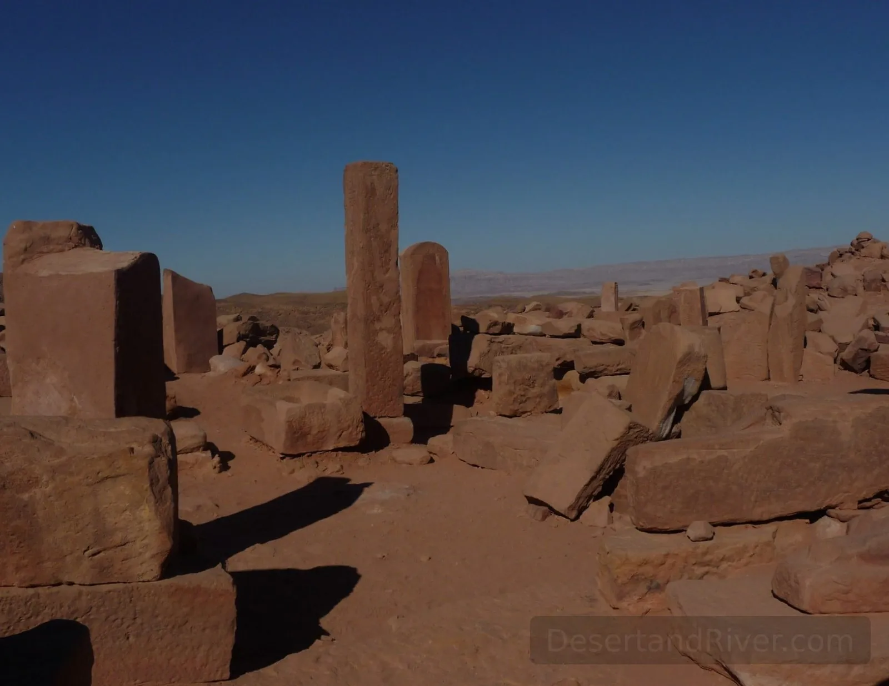
Serabit el-Khadim
Serabit el-Khadim in het zuidwesten van de Sinaï, Egypte, is een oude archeologische plek met uitgebreide turkoois- en kopermijnen, de resten van een tempel van Hathor en vroege alfabetische inscripties.
Op deze plek boven op een plateau werkten Oude Egyptenaren en arbeiders uit het Nabije Oosten al vanaf ten minste het Middenrijk, met een tempel gewijd aan Hathor, beschermster van de woestijn en “Meesteres van het Turkoois”. De verspreide stèles en rotsinscripties in vroeg Proto-Sinaïtisch schrift, uitgehakt in het door de zon gebleekte gesteente, getuigen van een lange menselijke band met dit hoge, winderige landschap, waar taal en geloof letterlijk in steen werden vastgelegd.
Ongeveer 43 km ten oosten van Abu Zenima, op een plateau van ongeveer 850 m boven zeeniveau.

Magharet el Teleha
Magharet el Teleha is een kalksteengrot in Zuid-Sinaï, Egypte, bekend om de prehistorische inscripties in zowel Proto-Sinaïtisch schrift als Egyptische hiërogliefen, bij oude turkooismijnen.
De grot bevat de oudst bekende voorbeelden van het Proto-Sinaïtische alfabet naast hiërogliefische inscripties, een combinatie die voor het eerst werd beschreven door archeoloog Flinders Petrie. Binnen heerst een gedempt gevoel van stilstaande tijd, waar het vroege schrift en de nabijgelegen turkooismijnen zowel de creativiteit als het harde werk van oude volkeren in het uitgestrekte Sinaïlandschap laten zien.

Umm Yasser
Umm Yasser, een baanbrekende bedoeïenenvrouw van de Hamada-stam, is de eerste vrouwelijke hoofdgids op de Sinai Trail en leidt trektochten door de landschappen en cultuur van Zuid-Sinaï.
Sinds 2019 begeleidt Umm Yasser tochten op de traditioneel door mannen gedomineerde Sinai Trail, vooral voor vrouwen, en vertelt ze over de lokale planten, de geschiedenis en het leven van de bedoeïenen. Haar aanwezigheid straalt een stille veerkracht en continuïteit uit: ze verbindt eeuwenoude tradities met nieuwe mogelijkheden voor vrouwen in de regio.
Begon in 2019 als gids; eerste vrouwelijke bedoeïenen-hoofdgids op de Sinai Trail.
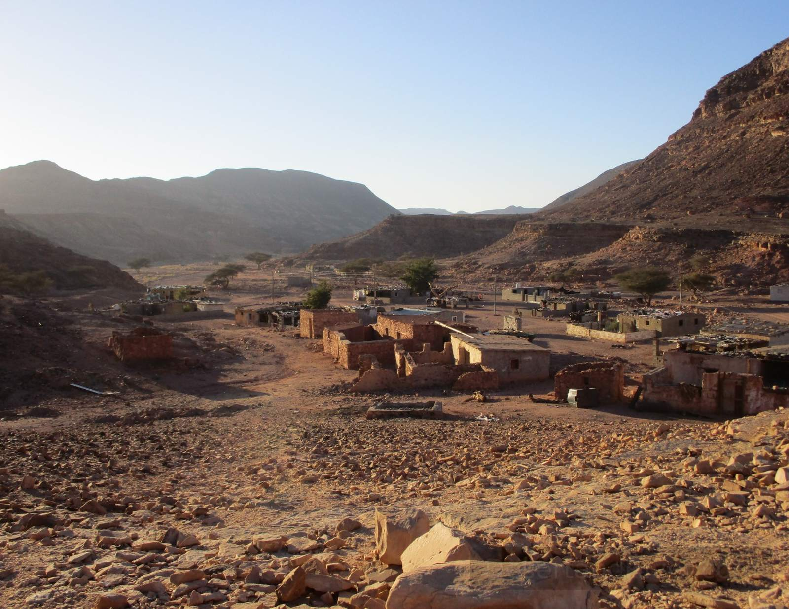
Wadi el Sahu
Wadi el Sahu is een afgelegen wadi in Zuid-Sinaï met een geïsoleerd bedoeïenendorp en oude rotsinscripties uit de faraonische, Nabatese en prehistorische tijd.
Het dorp wordt vooral bewoond door de Hamada-stam en geeft bezoekers een inkijk in het traditionele leven en de gastvrijheid van de bedoeïenen, met als bekend voorbeeld Umm Yasser, de eerste vrouwelijke gids van de Sinaï. In het stille woestijnlandschap roepen de gegraveerde stenen en uitgesleten paden een diep gevoel op van geschiedenis en blijvende menselijke aanwezigheid.
Met zichtbare rotsinscripties uit verschillende perioden en nog bewoonde traditionele bedoeïenenhuizen.
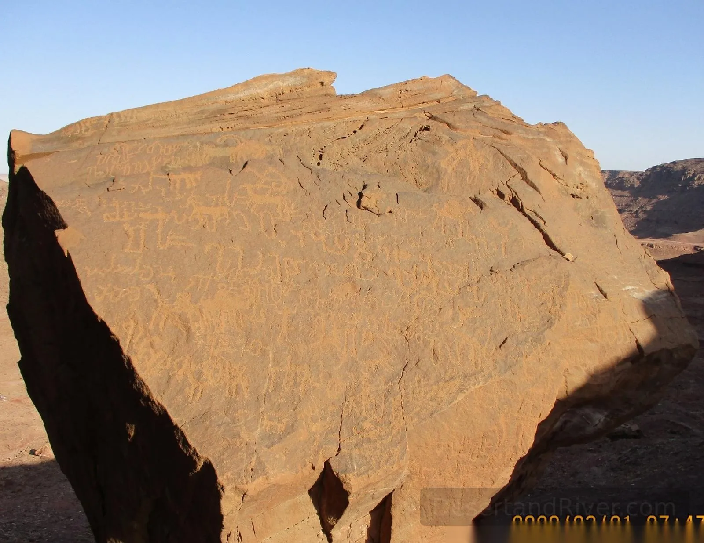
Wadi el Lihyan
Wadi el Lihyan is een woestijndal in Zuid-Sinaï, Egypte, bekend om de oude rotsinscripties, mineraalafzettingen en historische bedoeïenenpaden.
In het dal staan rotstekeningen en zijn sporen van vroege mijnbouw te zien, het bewijs van menselijke aanwezigheid door de millennia heen. Het kale, open terrein geeft een diep gevoel van stilte, waar de schaal van de woestijn de tijd stil lijkt te zetten.
Hoogte rond 400–600 meter boven zeeniveau; bereikbaar via 4x4-paden.
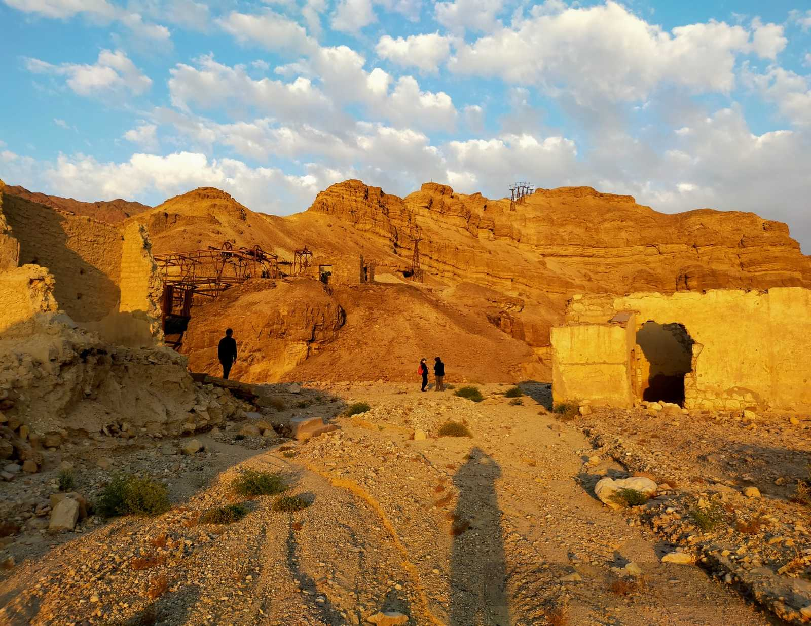
Jabal Um Bugma
Een breed, hooggelegen granieten plateau en voormalige mijnnederzetting in Zuid-Sinaï, op ruig woestijnterrein op het Egyptische Sinaï-schiereiland.
Um Bogma verwijst zowel naar het plateau als naar de verlaten mangaanmijnen uit het begin van de 20e eeuw, aangelegd tijdens het Britse bestuur en later door de Egyptische overheid geëxploiteerd tot de sluiting halverwege de 20e eeuw. De plek ligt tussen diepe granieten kloven en droge dalen waar bedoeïenen al eeuwen doorheen trekken; wandelaars op lange woestijntochten noemen vaak de kale stilte en de ingetogen geometrie van licht en steen bij zonsopkomst.
Bereikbaar per 4x4

Wadi Barag
Wadi Barag is een dal in centraal Sinaï, bekend om de opvallende rotsformaties en de verschillende soorten gesteente, een schilderachtige doorgang langs de woestijnweg.
Als je per voertuig door Wadi Barag rijdt, ontvouwen de gelaagde kleuren en texturen van het gesteente zich geleidelijk, met zowel geologische variatie als de stille, blijvende aanwezigheid van het woestijnlandschap. De stenen, van rood zandsteen tot lichte kalksteen, geven een subtiel ritme dat het verstrijken van de tijd markeert.
Bereikbaar per 4x4

Sheikh Abu-Taleb
Een herkenningspunt en lokale bedoeïenenplek in centraal Sinaï, Egypte, waar een bedoeïenensjeik begraven ligt op een bescheiden heuvel tussen woestijnwadi's, bij traditionele karavaanroutes.
De plek ligt in het weidse, droge landschap van centraal Sinaï langs Wadi Islaf en is plaatselijk bekend om het graf van een gerespecteerde bedoeïenenfiguur, Sheikh Abu-Taleb, op een kleine verhoging in de bodem van de wadi. Reizigers en woestijnbewoners beschrijven een tastbare stilte op de plek waar zand, steen en de weidse hemel samenkomen, en waar de stille aanwezigheid van het graf het langzame verstrijken van de tijd in deze dunbevolkte regio oproept.
In het woestijnterrein van centraal Sinaï bij Wadi Islaf, een herkenningspunt op traditionele routes door het schiereiland.

Wadi Sahab
Wadi Sahab is een droog dal (wadi) in Zuid-Sinaï, Egypte, gevormd door een periodiek stromende rivierbedding in droge bergen ten oosten van het hoogland van centraal Sinaï, kenmerkend voor het afwateringssysteem van het schiereiland.
Wadi Sahab ligt in het ruige terrein van Zuid-Sinaï en maakt deel uit van het grotere netwerk van seizoensgebonden waterlopen in de kalksteen- en granieten hooglanden van het schiereiland. In het dal groeit verrassend veel, waaronder groepjes acacia's, die een stil contrast vormen met het droge landschap eromheen en uitnodigen tot een bezonnen gevoel van rust en tijd.
Hoogte ongeveer 879 m; in het dal groeien dichte plekken begroeiing en acacia's.

Wadi Barah
Wadi Barah is een afgelegen dal in het zuiden van het Sinaï-schiereiland, met opvallende rotsformaties, oude inscripties en sporen van historische menselijke activiteit.
In Wadi Barah ligt Hagar el-Logha, de “Sprekende Steen”, waarvan de natuurlijke echo stemmen door het dal laat galmen. Er zijn Nabatese, koptische, Griekse en Arabische inscripties bewaard gebleven, een gelaagd verslag van de lange en gevarieerde menselijke aanwezigheid in de Sinaï, waar de stilte van de woestijn uitnodigt tot rustige bezinning.
Hagar el-Logha is bereikbaar via een korte wandeling vanaf het hoofdpad door het dal.

Wadi Khamila
Een smal dal in Zuid-Sinaï, bekend om oude rotskunst en inscripties die getuigen van vroege Egyptische en Nabatese aanwezigheid en historische mijnbouw in de regio.
In Wadi Khamila staat een 5000 jaar oud rotspaneel met een Egyptische figuur die een plaatselijke bewoner overheerst, verbonden met de koperwinning en de god Min als “heerser over het kopererts”. Later werden er Nabatese inscripties aan toegevoegd, wat een gelaagde blik geeft op de lange menselijke geschiedenis van de Sinaï. De stilte van het dal roept een gevoel op van tijd die zich over millennia uitstrekt.
Bereikbaar per 4x4, daarna een korte wandeling

Plateau Umm Arak
Het Umm Arak-plateau is een zandstenen hoogland in Zuid-Sinaï, Egypte, met een onlangs beschreven rotsschuilplaats vol gelaagde menselijke kunst en inscripties uit duizenden jaren bewoning.
De natuurlijke zandstenen schuilplaats op het plateau ligt ongeveer 5 km ten noordoosten van het oude mijn- en tempelcomplex van Serabit el-Khadim, is meer dan 100 m lang en bevat tekeningen en gravures van de late prehistorie tot in historische tijden. De wanden tonen verschillende technieken en afbeeldingen, zoals dieren, jachttaferelen, ruiters en inscripties, die de blijvende aanwezigheid oproepen van mensen die dit harde landschap bewoonden en doorkruisten.
Schuilplaats van ~100 m lang met lagen rotskunst van ~10.000 v.Chr. tot de vroegislamitische tijd.
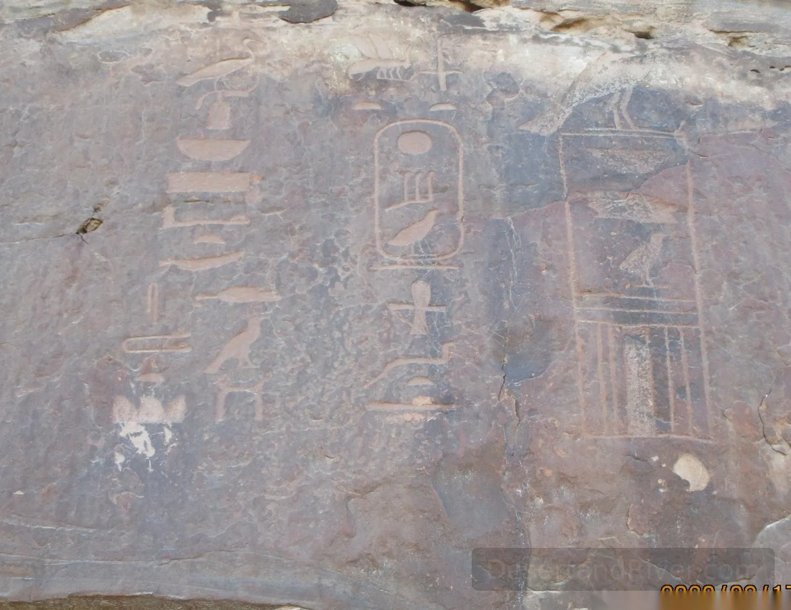
Wadi Kharig
Wadi Kharig is een dal in het binnenland van Zuid-Sinaï, Egypte, bekend om de resten van oude kopermijnbouw en metaalbewerking, en om inscripties met onder meer de naam van koning Sahoere uit de Vijfde Dynastie (ca. 2428 v.Chr.).
Het dal ligt op ongeveer 30 minuten reizen van de regio Serabit el-Khadim en maakt deel uit van een groter geheel van prehistorische mijnbouwlandschappen en mijnen uit de bronstijd in Zuid-Sinaï, waar smeltkroezen en smeltresten getuigen van vroege metaalbewerking. Tussen de rotsinscripties staat een cartouche met de naam van koning Sahoere, die het harde woestijnlandschap verbindt met de Vijfde Dynastie van Egypte; de stilte van het dal laat voelen hoeveel menselijke inspanning in deze stenen ligt.
Op ~30 min van Serabit el-Khadim, in het mijnbouwgebied van centraal Sinaï.

Jabal Hasbar
Jabal Hasbar is een kleine zandsteenheuvel bij Serabit el-Khadim, bekend om de vroege inscripties, waaronder hiërogliefen met een cartouche van koning Menkaura (4e dynastie, ca. 2510 v.Chr.).
De inscripties op Jabal Hasbar combineren symbolische tekens met hiërogliefische tekst en verbinden de plek met faraonische expedities in de Sinaï. Tussen de okerkleurige kliffen roepen de gravures een gevoel op van diepe geschiedenis en de stille volharding van menselijke aanwezigheid door de millennia heen.
Ontdekt in 2012; bereikbaar per 4x4 en een korte klim.

Wadi Omeria
Wadi Omeria is een woestijndal in Zuid-Sinaï, bekend om de onlangs ontdekte oude inscripties met de Horus van Narmer, de eerste koning van de Eerste Dynastie van Egypte.
De inscripties, in 2012 ontdekt door Tallet en Laisney, tonen vroege faraonische beeldtaal die zelden bewaard is gebleven in het droge landschap van de Sinaï. De stille weidsheid en het verschuivende zand van het dal geven een subtiel gevoel van diepe tijd, waarin menselijke aanwezigheid zowel vergankelijk als monumentaal aanvoelt tegenover de blijvende woestijn.
In Zuid-Sinaï; bereikbaar via een offroadpad per 4x4
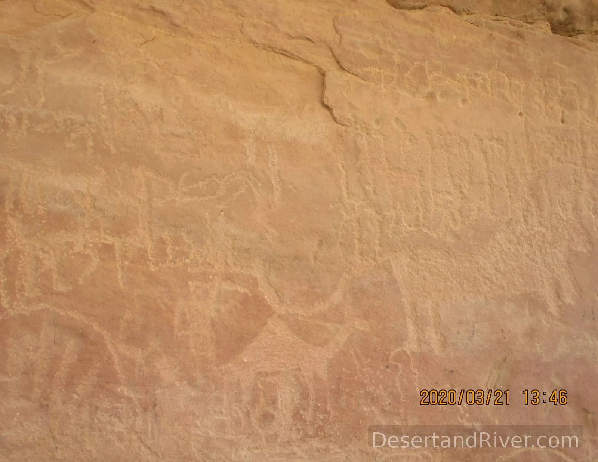
Wadi Humur
Wadi Humur is een afgelegen dal in Zuid-Sinaï met rotsinscripties langs de Nabatese handelsroute, met historische taferelen van oorlog tot het leven van de bedoeïenen.
Er staat een opvallende rots met gedetailleerde afbeeldingen van een veldslag en een oude bedoeïenenbruiloft, een zeldzame inkijk in de sociale en militaire geschiedenis van de regio. Naast deze gravures voel je de stilte van de woestijn en het gewicht van eeuwen die in steen bewaard zijn gebleven.
Aan de Nabatese handelsroute, bereikbaar per 4x4
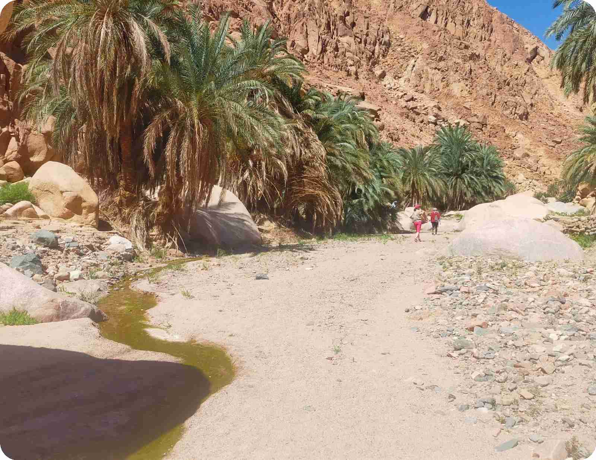
Wadi el Kit
Wadi el Kit (plaatselijk ook Wadi Kid genoemd) is een natuurlijk woestijndal in het zuiden van het Egyptische Sinaï-schiereiland, dat door ruig metamorf terrein snijdt in het droge landschap bij Dahab en de omliggende hooglanden.
De wadi maakt deel uit van het grotere netwerk van seizoensgebonden droge rivierbeddingen die het landschap van de Sinaï vormen, met steile rotswanden, alluviale vlaktes en hier en daar bronnen die bedoeïenenbewoning en kleine plekjes woestijnbegroeiing mogelijk maken. Geologisch loopt hij door oeroud precambrisch gesteente van het Arabisch-Nubisch Schild, en in de rustigere delen heerst een tastbare stilte, waar licht en schaduw over graniet en gneis verschuiven en het langzame verstrijken van de tijd in deze dunbevolkte regio voelbaar wordt.
Bereikbaar per 4x4 en een korte wandeling

Forest of Pillars
Het Forest of Pillars is een afgelegen geologische formatie van natuurlijke, rechtopstaande buisvormige rotszuilen op de zandvlakte onder het Tih-plateau in Zuid-Sinaï, Egypte.
De plek ligt bij Gebel Fuga en is bereikbaar via offroadpaden landinwaarts vanaf Serabit el-Khadim. Ze bestaat uit groepjes ijzeroxiderijke zuilen, waarvan de vormen het resultaat zijn van een zeldzaam proces van mineraalneerslag in woestijnzandsteen. De formaties staan in scherp contrast met de brede, door de wind gevormde vlaktes eromheen en geven een stil gevoel van geologische tijd, waarin rust en schaal voelbaar zijn in de lange schaduwen over de woestijnbodem.
Alleen bereikbaar per 4×4

Wadi Zalaga
Wadi Zalaga is een breed woestijndal in Zuid-Sinaï, bekend om de traditionele kamelenraces van de bedoeïenen, die het culturele erfgoed van de stammen levend houden.
Wadi Zalaga strekt zich uit over een stil, open landschap waar de stammen Al-Tarabin en Al-Mazayna elk jaar samenkomen voor uithoudingsraces van 28–30 km. De droge weidsheid van het dal laat zowel de hardheid als de rust van de Sinaïwoestijn zien, en geeft een gevoel van tijdloze continuïteit in het ritme van het lokale leven.
Bereikbaar per 4x4

Wadi Kharaba
Wadi Kharaba is een droog dal (wadi) op het Egyptische Sinaï-schiereiland, onderdeel van het fijnmazige netwerk van droge rivierbeddingen die bij zeldzame regenval af en toe water voeren en het ruige woestijnlandschap vormen.
Wadi Kharaba is een typisch voorbeeld van de steile, stenige geulen van dit droge schiereiland, in duizenden jaren uitgesleten door plotselinge overstromingen en winderosie. De contouren en afzettingen getuigen stil van diepe geologische tijd en klimaatcontrasten, en roepen een gevoel op van oeroude krachten die in stilte hun werk doen.
Alleen bereikbaar per 4×4; het terrein is erg ruig en zwaar.
Hoe we kiezen wat bij elkaar past
We “verzamelen” geen plekken. We ontwerpen routes die rekening houden met afstand, hitte, terrein, vergunningen en wat gasten aankunnen. Vaak zijn de meest memorabele reizen die met minder stops en meer tijd.
Volgende stap
Kies 5–10 plekken die je echt interesseren. Plan daarna een gesprek, dan stellen we een verantwoorde route voor.
Plan een gesprek van 30 minuten Lees hoe reizen op maat werkt